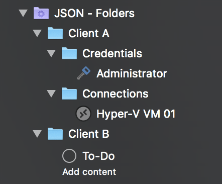

Building folder hierarchies
By now you should have a good overview of how the rJSON format is structured and probably already toyed around with it a bit. One important topic we haven't touched yet is how folder hierarchies can be expressed in rJSON. Consider the following example:

So, what do we have here? Multiple folders, some of them nested in other folders, each having one child object.
Let's break the individual objects in this sample down into path representation:
- Client A/Credentials/Administrator
- Client A/Connections/Hyper-V VM 01
- Client B/To-Do
So how do we express this in rJSON? Turns out there are two ways:
- The easy but less flexible way
- The harder but more flexible way
The easy (less flexible) method
We'll start with the easy but less flexible method:
{
"Objects": [
{
"Type": "Credential",
"Name": "Administrator",
"Username": "administrator",
"Password": "@he38qewhq82r!",
"ID": "00001",
"Path": "Client A/Credentials"
},
{
"Type": "RemoteDesktopConnection",
"Name": "Hyper-V VM 01",
"ComputerName": "hyper-v-vm-01",
"CredentialID": "00001",
"Path": "Client A/Connections"
},
{
"Type": "ToDo",
"Name": "To-Do",
"Description": "Add content",
"Path": "Client B"
}
]
}
We're going to skip most of the content in this sample and focus only on the Path properties.
Recall the path representation we previously mentioned? Basically we apply this to each of the objects we create in this sample.
For instance, the first object (the "Administrator" credential) has its Path set to "Client A/Credentials". This tells our parser to put the credential into a folder named "Credentials" which itself is nested inside another folder named "Client A".
The remote desktop connection "Hyper-V VM 01" uses the same approach to ensure it lands in a folder named "Connections" which is nested in a folder named "Client A".
Which leaves us at the last object, the creatively named To-Do item "To-Do". 😉 This one is not nested in subfolders but instead will end up right in the "Client B" folder.
A few things worth pointing out here:
- The paths are always relative to the dynamic folder or rJSON document. You cannot relocate objects outside of those boundaries using rJSON.
- You can add a leading (root) slash if you want. It will be ignored by the parser. Or in other words:
"Path": "/Client A"is the same as"Path": "Client A". - If you're a Windows guy, go ahead and use backslashes instead of those beautiful forward slashes everyone else is using. In other words:
"Path": "Client A\Credentials"is the same as"Path": "Client A/Credentials".
The hard (more flexible) method
You might be wondering what's wrong with the easy method. It's perfectly sound for most scenarios but is missing one key feature: There's no way to configure the properties of the folders themselves. So that's why we're happy to introduce you to the dark side… I mean, the hard method:
{
"Objects": [
{
"Type": "Folder",
"Name": "Client A",
"Objects": [
{
"Type": "Folder",
"Name": "Credentials",
"Objects": [
{
"Type": "Credential",
"Name": "Administrator",
"Username": "administrator",
"Password": "@he38qewhq82r!",
"ID": "00001"
}
]
},
{
"Type": "Folder",
"Name": "Connections",
"CredentialID": "00001",
"Objects": [
{
"Type": "RemoteDesktopConnection",
"Name": "Hyper-V VM 01",
"ComputerName": "hyper-v-vm-01",
"CredentialsFromParent": true
}
]
}
]
},
{
"Type": "Folder",
"Name": "Client B",
"Objects": [
{
"Type": "ToDo",
"Name": "To-Do",
"Description": "Add content"
}
]
}
]
}
Now that looks complicated! And we're talking 47 lines vs. 25 for the previous method. Doesn't sound very efficient but there's a very good reason we'd want to use this instead of the easy method.
Consider having more than one connection in the "Client A/Connections" folder. Now if you wanted to assign the same credential to each of those connections, wouldn't it be easier to just assign it to the parent folder and let the connections inherit their parent folder's credentials? Or maybe you want to save some additional notes on the Client folders for documentation purposes? Or assign a Secure Gateway to the folder and let all connections use it… All of these cases make it necessary to be able to specify additional properties for the folder objects. So that's why folder objects are first-class citizens in rJSON and can be created just like other objects.
To create a folder object, just set its Type to "Folder" and specify the child objects using the Objects property, just like the Objects property of the root JSON element (RoyalJSONDocument).
To let objects inherit their credential configuration from their parent, set their CredentialsFromParent property to "true".
Note
Note that the Path property takes precedence over folder nesting, so if both are used, the object will be placed in the folder pointed to by the Path property.